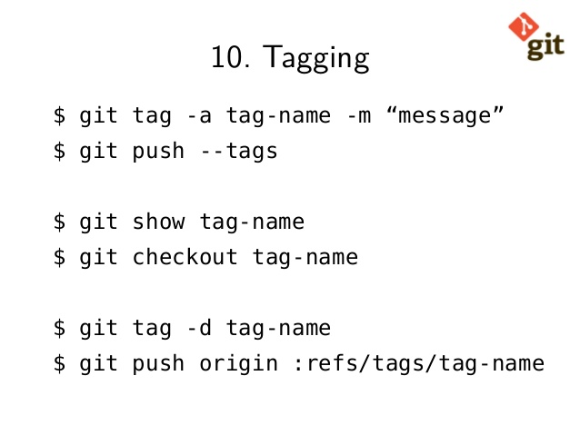
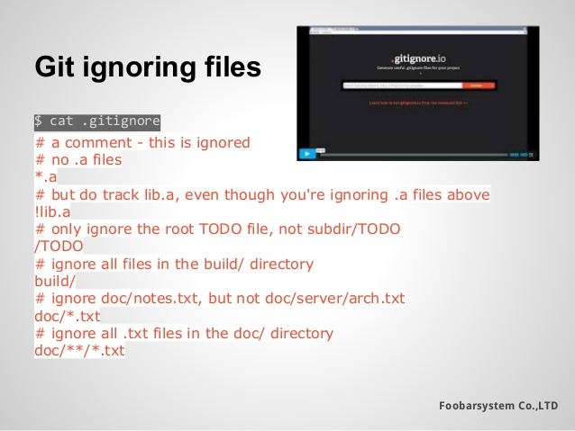
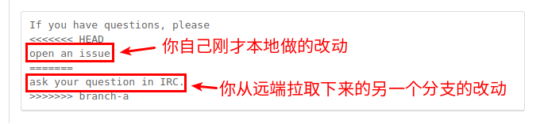
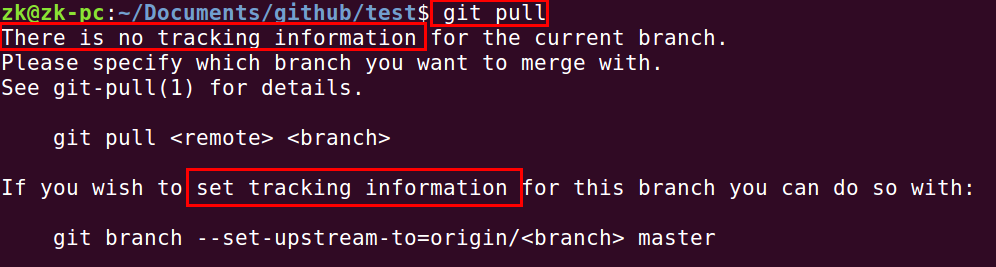
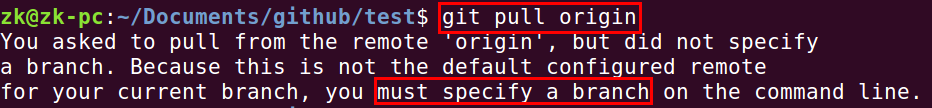
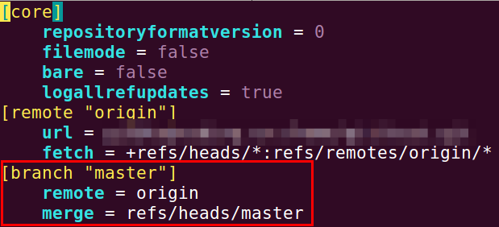
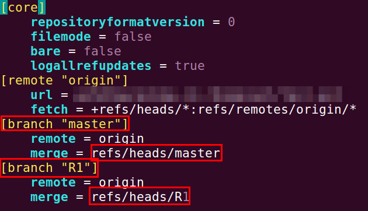

Git
(1) 如何搭建 Git 服务器
请参考4.4 Git on the Server - Setting Up the Server
|
|
(2) 如何生成 SSH Key
|
|
然后拷贝 ~/.ssh/id_rsa.pub 中的内容到 Git 服务器电脑的 ~/.ssh/authorized_keys 文件中去
(3) Git Diff

(4) Git Data Transport Commands

(5) Git Reset

(6) Git Tagging

|
|
(7) Git Ignore

Visit gitignore.io
(8) 恢复误删除的文件
误删除，但是未提交:
|
|
(9) 添加一个 new remote
|
|
(10) git rm
不想跟踪某个文件或者文件夹了:
|
|
(11) 删除分支
删除远程分支:
|
|
删除本地分支:
|
|
(12) HEAD detached from
当前修改的东西不在任何一个分支上，但是也已经 commit 了，想要将修改部分的东西合并并切换到正确的分支上的方法：
- 创建一个临时分支
- 切换到正确分支，
merge临时分支 - 删除临时分支
参考: What’s a “detached HEAD” in Git?
(13) 如何安装 Git
|
|
(14) 显示某个文件被编辑的历史记录
|
|
(15) 冲突

(16) 切换到某个 commit 然后再返回
|
|
(17) 推送本地新分支到远程服务器
|
|
(18) git pull 的命令
Incorporates changes from a remote repository into the current branch. In its default mode (默认情况), git pull is shorthand for git fetch followed by git merge FETCH_HEAD.
git pull will fetch new commits from all tracked branches (所有跟踪的版本) from the default remote(origin) (默认远程 origin)
To see which remote servers (哪个远程服务器) you have configured, you can run the git remote command. It lists the shortnames of each remote handle you’ve specified. If you’ve cloned your repository, you should at least see origin – that is the default name Git gives to the server you cloned from.
You can also specify -v, which shows you the URLs (显示 URL) that Git has stored for the shortname to be used when reading and writing to that remote.
|
|
git pull 默认不能用:

git pull origin 的默认行为:

执行如下命令后:
|
|
会发现 config 文件发生了一点变化:

我们创建另外一个分支 R1 之后，并再次调用 -u origin/R1 发现:

即 git pull 默认合并远程的哪一个分支，是需要配置的。并不是默认 master 就从 master 分支，R1 就从 R1 分支。
(19) 帮助文档
|
|
显示所有支持查看帮助文档的命令 [COMMAND]:
|
|
(20) git 查看版本
|
|